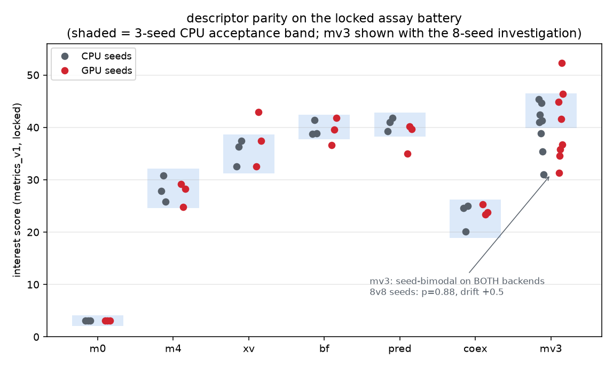
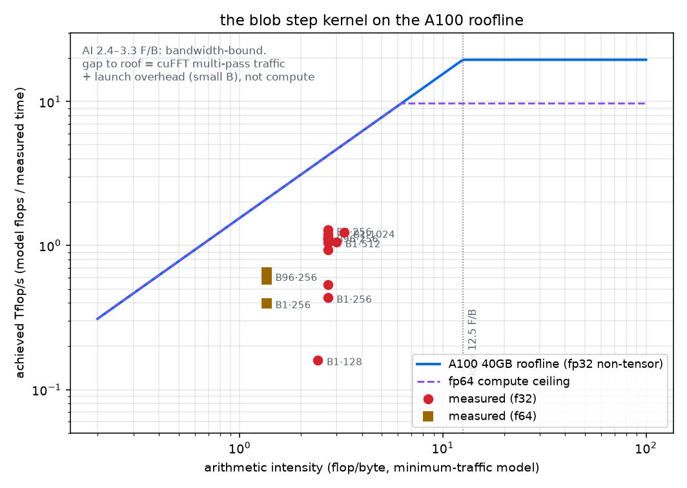
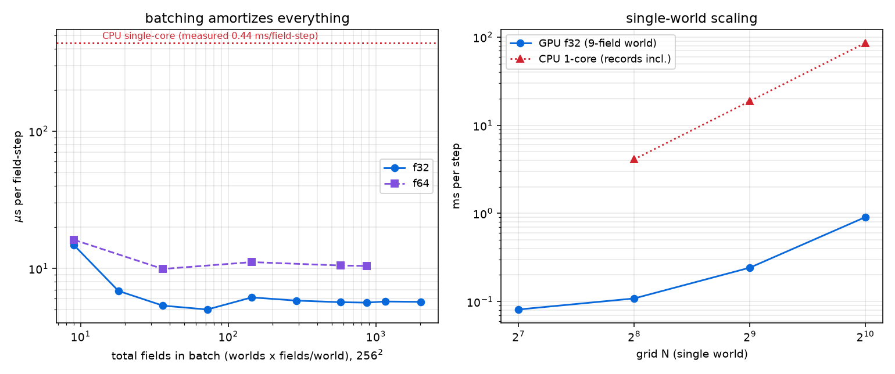

Every blob world in this series — from the single M0 blob to the evolved
predator–prey ecologies — is one genome-parameterized PDE system
(post 7): n_act cubic activator fields ui plus
n_chan linear relaxation channels xc, integrated with a
pseudo-spectral IMEX scheme at dt=0.02, dx=0.5, periodic:
On CPU (numpy + scipy.fft, one core) a 12-field 256² world costs 5.3 ms/step ≈ 0.44 ms per field-step, half FFT, half pointwise. A T=5000 assay run is ~17 minutes; a pop-96 generation at T=2500 is ~14 core-hours. The workloads we care about: (a) populations of small worlds (3–14 fields, 256², 125k–2M sequential steps — evolution's shape), (b) single large worlds (512²–1024²).
Sequential steps can't be parallelized — dt is physics (post 2's lattice-pinning lesson, and the A5 trap below). What CAN be parallelized is everybody else's world. The port packs an entire population into one tensor:
Ragged worlds (a 3-field M0 next to a 14-field ecology) are padded, not masked: padding slots get λ=k₁=u₀=0, zero W rows/K columns, D=0, 1/τ=0. A zero-initialized padded field then stays exactly zero forever — inertness is by parameter construction, verified bitwise in the test suite. No cross-world term exists anywhere (reactions are per-world einsums, FFTs are per-field), so a NaN blow-up in one world cannot touch its neighbors — this matters because evolution searches expect some genomes to explode.
The whole step is one jax.jit program; 250 steps (one record
interval) run device-side in a lax.fori_loop per launch. Per-world
threefry noise keys are folded on the absolute step index, so a chunked
run is bit-identical to an unchunked one — same trick the CPU v2 assay uses for
adaptive horizons, and it survives on GPU (gate below). f32 is the production
dtype (matching the locked CPU assay); f64 is a flag away for parity testing.
Bitwise identity across backends is impossible (different FFT algorithms,
different reduction orders), so the gates are defined at three levels, locked in
probes/blobs/gpu/GATES.md before the benchmark battery ran:
| gate | definition | result (A100) |
|---|---|---|
| F64 trajectory | all 7 ground-truth worlds, f64, noise=0, bit-identical ICs, T=100 tu (5,000 steps): rel-L2 field error < 10⁻⁵ vs the locked CPU kernel, single AND batched-7 modes | PASS — worst 7.9·10⁻¹³ (8 orders inside the gate) |
| Padding / determinism | padded slots exactly 0; solo-vs-padded trajectories bitwise (CPU) / ≤10⁻⁵ (GPU: cuFFT picks different kernels per batch shape — measured last-bit reassociation only); same-shape reruns bitwise | PASS (5.9·10⁻⁷ rel-L2 after 200 steps across batch shapes; bitwise same-shape) |
| Chunked continuation | advance(25)×4 == advance(100) bitwise, noise on (absolute-step key folds) | PASS — bitwise on GPU too |
| Bond anchors | A4s pair dt=0.02 → d*=15.40±0.5%; A5 pair dt=0.005 → d*=15.70±0.5%; A5 pair dt=0.02 → must REPLICATE (the trap reproduces) | PASS — 15.3952, 15.7215, replicated at t=2250 (CPU: ~2600) |
| Descriptor parity | full locked assay (T=5000, f32, working noise) × 7 worlds × seeds 1–3 on GPU, scored with the LOCKED metrics_v1; per-world interest inside the CPU 3-seed band (band, rank, and drift criteria declared in GATES.md) | 6/7 PASS; mv3 3-seed FAIL → investigated (below) → parity confirmed 8v8; mean drift −0.9 points (gate ≤2.0) |

The machine-v3 world (engine+cargo, the top scorer) failed its 3-seed band: GPU seeds 2/3 scored 31/35 against a CPU band [39.8, 46.5]. Per the locked protocol — investigate, never re-roll — we ran seeds 4–8 on BOTH backends (pre-registered, all reported). Verdict: mv3 is seed-bimodal on both engines — a low mode (soup collapses to ~8 blobs, "constant", interest 31–39) and a high mode (12–37 blobs, "switch/oscillator", interest 41–52). The CPU's original 3 seeds all happened to land in the high mode; the band was an underestimate of the world's own seed noise. Over 8v8 seeds: CPU 40.0±4.8 vs GPU 40.4±7.1, Mann-Whitney p=0.88, drift +0.45 points. Parity holds; the methodological lesson — 3-seed acceptance bands are the wrong estimator for switch-regime worlds — is recorded in GATES.md for the next metrics lock.
Counting flops (2 real FFTs ≈ 5N²log₂N² + ~15 flops/px reaction + spectrum multiply) against minimum bytes (state in/out + spectrum in/out + E), the step's arithmetic intensity is 2.4–3.3 flop/byte — far left of the A100's 12.5 F/B ridge. This kernel is bandwidth-bound by construction: no tensor-core trick will help it (and we pin einsums to full FP32 precision anyway — on A100, XLA would otherwise silently use TF32 tensor cores, a ~10⁻³-level numerics change that the gates would catch).

Measured points sit at 25–30% of nominal peak bandwidth under the minimum-traffic model — i.e. ~35–40% under the as-executed model once cuFFT's separate row/column passes and the standalone E-multiply kernel are counted (each stage is its own read+write; XLA cannot fuse into cuFFT custom calls). The residual gap is transform-size efficiency: 256² batched real FFTs are small transforms, and cuFFT's achievable fraction at that size is well below STREAM bandwidth. The practical readings:

| optimization | verdict | evidence |
|---|---|---|
| batched population tensor, one jit | KEPT | 14.8 → 5.0–5.6 µs/field-step (2.6–3×). Batching cuFFT + pointwise across worlds is THE win. |
device-side chunk loop (lax.fori_loop, 250 steps/launch) |
KEPT | python-loop stepping at B=96 costs +8% (5.26 vs 4.86 ms/step) ≈ 0.4 ms/step of host dispatch; that fixed cost would dominate at B=1 (0.13 ms/step total). Chunking also removes 250 host syncs per record. |
donate_argnums buffer reuse | KEPT | no speed change; halves device memory, enabling 224-world batches. |
| precomputed e−Dk²dt tensor | KEPT (wash) | recomputing exp on the fly: −1.6% (within noise). Precompute keeps the f64-computed-then-cast convention from the CPU kernel — an exactness argument, not a speed one. |
| reaction fusion (one XLA fusion vs forced barrier) | KEPT | unfused +10% (5.35 vs 4.85 ms/step). XLA already fuses the entire pointwise stage; don't break it. |
| CUDA graphs (XLA command buffers incl. CUSTOM_CALL) | REJECTED | B=1: +6% slower; B=96: ±0.0%. cuFFT custom calls fragment the capture; XLA's default launch pipeline is already near-optimal here. Honest negative. |
| activator-only device pulls at record points | KEPT | pop-96 wall 1,696 → 859 s (2.0×). Blob tracking needs only u-fields 25× more often than the full state; pulling channels every record was half the assay cost. Biggest single win after batching itself. |
| threaded host record path + async overlap | KEPT | part of the same 2×: CPU tracking of record k overlaps GPU stepping of chunk k+1 (JAX async dispatch). 16 threads vs 8: wash (396 vs 403 w/h) — now bound by per-world labeling work. |
All numbers measured on the rented pod (A100 40GB SXM4, $1.99/h, lambdalabs; jax 0.4.38/cuda12). CPU equivalents measured on this project's M-series laptop core running the locked pipeline — the actual engine every prior post used. "With records" = the full locked assay pipeline (blob tracking, patch stats, snapshots), not bare stepping.
| workload | CPU (1 core, measured) | A100 (measured, with records) | speedup | $ per eval @ $1.99/h |
|---|---|---|---|---|
| (i) evolution generation: pop-96 × T=2500, ~9-field worlds, 256² | 513 s/world → 7.0 worlds/h/core (~13.7 core-h/generation) | 858 s/generation → 403 worlds/h | 57× per core | $0.005/world ($0.47/generation) |
| (ii) 512² single world, T=10,000 (500k steps) | 2.60 h | 264 s | 35× | $0.15 |
| (iii) 1024² single world, T=10,000 | 11.9 h | 1,171 s | 37× | $0.65 |
Context: the entire phase-5b deepsearch (6 generations × 96 worlds) that took the CPU program days of staggered batches would take ~90 minutes and ~$3 on one A100. The 1024² world — 64× today's assay area, the "macro-ecology" regime the roadmap couldn't afford — is a 20-minute, 65-cent object. The single-world numbers are pull-limited by the record pipeline, not stepping (pure stepping: 512² = 0.24 ms/step, 1024² = 0.91); a future device-side tracker could roughly double (ii)/(iii).
The benchmark met production and lost. When the first real evolution campaign ran on this port (blobkit 0.3.x: the batched ladder driving full assays, not tracking-only populations), throughput came in at 38–46 worlds/hour against a measured sim-only ceiling of ~189. The gap was not the kernel: an instrumented production run split the wall as record tracking 2299 s (cumulative) vs dispatch 493 s, battery 356 s, pull 40 s — and the record path ran at ~1.5 effective threads (GIL-serialized blob_list_fast, ~6.4 ms per field per record point, 85% of record cost). The 396 w/h headline above is real but describes a tracking-only workload; the full assay pays for science the tracker skips.
Two plausible fixes died by benchmark before any code shipped: nf-bucketed packing (padding waste was free capacity — the GPU was not FLOP-bound at B=32) and bigger batches (B-scaling is flat: 78/71/75/76 µs/world-step at B=8/32/64/96; cuFFT at 256² already fills an H100 at small B). Parallelizing record extraction into a spawn pool gated bitwise but bought only 1.10× — the rung loop still waited for records between chunks. Amdahl, textbook.
So the record math moved onto the device. A fast experiment loop on real evolved states (minutes per question, one question per experiment) settled the design in a day:
| experiment | verdict | evidence |
|---|---|---|
| naive min-neighbor label propagation | REJECTED | correct partitions but 496 sweeps on real labyrinths — right math, wrong algorithm. |
| sweep + pointer-jumping | REJECTED | stalls on 3 of 11 real fields (unions land at pixels; jumps only compress). |
| scatter-min root merging (label equivalence; jnp .at[].min is the scatter) | KEPT | converges in 4 outer rounds on all real fields and a pathological serpentine (diameter ~N²/8); partitions exactly match the locked host labeler; 0.12 ms/field labels-only. |
| segment stats on device (dense rank + scatter-add + scatter-max + trig moments) | KEPT | 7.6× per field end-to-end (1.58 vs 12.0 ms) incl. the tiny per-blob row pull; blob sets/areas/peaks exact, sums within 5.5e-7 (f32 accumulation; f64 variant gates at ~1e-12). |
| step/stats multi-stream overlap | UNNECESSARY | XLA serializes the two jits (overlap ratio 1.00 measured) — but device stats cost only 8.5% of chunk stepping (34.9 vs 410 ms per 32-lane×128-field REC point), so the simple in-loop fold wins. Honest negative that simplified the design. |
| async record apply (host) | KEPT | records/battery processed while the device steps the next chunk; barrier only at rung decision points — assay decisions bitwise identical; ×4.54 on the record microbench. |
Parity policy (inherited from the noise-stream precedent): integer and max-reduction outputs — partitions, blob counts, areas, peaks — must be exact; floating-point sums use f64 device accumulation behind a 1e-12 tolerance gate, because bitwise equality of scattered sums is fundamentally unattainable (fp non-associativity meets GPU scatter order).
Method note. Every claim in this chapter is a row in a versioned benchmark suite that now ships with the package ( perf/bench.py: kernel / assay-mix / generation tiers, frozen workload hashes, one-command version comparison). The rule that produced the honest negatives above: no performance claim without a benchmark row.
The v2 assay integration is a deliberate hook, not a rewire:
run_soup_gpu() / the batch drivers produce byte-compatible records
(they reuse soup_sim_v2's own IC builder and record functions —
same numpy RNG, bit-identical seeded soups), so a future evolution run swaps
backends with one import. The live CPU v2 campaign keeps its engine untouched.